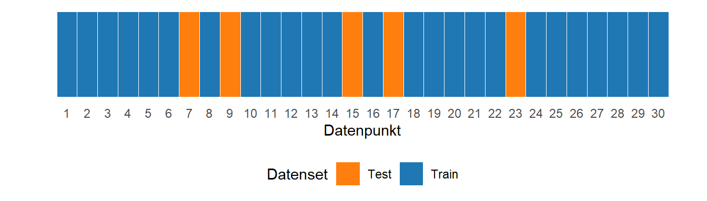
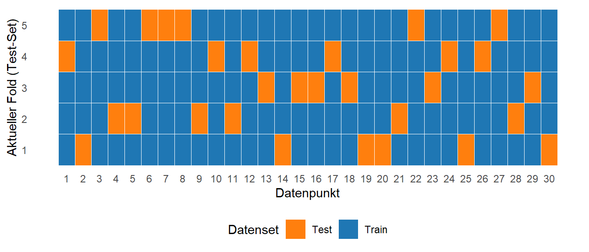

21 Polynome und Prädiktion
Im folgenden wird das lineare Modell noch erweitert indem nun auch Zusammenhänge abgebildet werden können, die nicht nur linear sind, sondern die Zusammenhänge zwischen \(X\) und \(Y\) können auch kurvenförmig sein. Beispielsweise einer Parabel \(Y = X^2\) folgen. Dies lässt sich auch problemlos in das lineare Modell integrieren, indem die Prädiktorvariablen in Potenzen in das Modell integriert werden. Anschließend wird noch einmal die Frage untersucht welche Prädiktorvariablen in das Modell integriert werden sollen und wie verschiedene Modell miteinander verglichen werden können.
21.1 Multiple Regression und Polynome
In der Praxis kann es durchaus vorkommen, dass der Zusammenhang zwischen den Prädiktorvariablen \(X\) und der abhängigen Variable \(Y\) nicht linear ist, sondern eher kurvenförmig. Beispielsweise ist in Pickett u. a. (2021) der Zusammenhang zwischen der Ermüdung und der Wettkampfleistung untersucht worden und der folgende Zusammenhang zwischen den beiden Variablen wurde beobachtet (Abbildung 21.1).
Aus physiologischen Überlegungen heraus, haben die Autoren den Zusammenhang zwischen den beiden Variablen nicht nur mittels einer einfachen linearen Regression modelliert, sondern es wurde auch ein Polynom 2. Grades an die Daten angepasst (siehe Mathematische Grundlagen zu Polynomen). Dies resultierte in dem folgenden Modell (siehe Abbildung 21.2).

Dies führte zu der folgenden Modellformulierung:
\[\begin{equation*} y_i = 89.8 - 6.99 \cdot x_i + 0.23 \cdot x_i^2 \end{equation*}\]
Die Prädiktorvariable fatigue ist nicht nur als linearer Faktor in das Modell eingegangen, sondern auch die quadrierten Terme wurden in das Modell integriert. Dies erlaubt die Modellierung eines parabelförmigen Zusammenhangs zwischen der Prädiktorvariablen fatigue und der abhängigen Variablen Zeit. Dieser Ansatz, dass nicht nur die Variable sondern auch ihre Potenzen im Modell verwendet werden, kann dabei beliebig erweitert werden. Die Grenze ist abhängig von der Anzahl der vorhandenen Datenpunkten. Bei einem Datensatz mit \(N\) Datenpunkten hat das höchst mögliche Polynom den Grad \(N-1\). Dies ist natürlich in den seltensten Fällen sinnvoll, da beispielsweise im Beispiel mit \(N = 19\) Datenpunkten die Interpretation eines Polynoms vom Grade \(18\) relativ schwierig wird. Dieser Umstand wird später im Skript noch einmal aufgegriffen. Wenn eine Prädiktorvariablen derart transformiert in das Modell eingeht, dann wird oft von einer sogenannten Polynomregression gesprochen, wobei diese Begrifflichkeit nicht universell verwendet wird.
Die Polynomregression stellt somit eine Erweiterung der einfachen linearen Regression dar. Während die lineare Regression versucht, eine gerade Linie bzw. eine flache Ebene an die Daten anzupassen, erlaubt die Polynomregression gebogene Kurven bzw. Oberflächen an die Daten anzupassen. D.h. der Effekt ist ähnlich dessen der schon bei den Interaktionseffekten beobachtet wurde. Dies erlaubt wieder komplexere Zusammenhänge zwischen den Prädiktorvariablen \(X\) und einer Kriteriumsvariable \(Y\) zu modellieren. Entsprechend nutzt die Polynomregression anstatt nur \(Y = \beta_0 + \beta_1 X\) , Modelle in Form von:
\[\begin{equation} Y = \beta_0 + \beta_1 X + \beta_2 X^2 + \beta_3 X^3 + \dots + \beta_d X^d + \epsilon \end{equation}\]
Die Variable \(d\) bestimmt den Polynomgrad des Modells. Je höher der Grad, desto flexibler ist das Modell. Üblicherweise werden die niedrigeren Grade bis zum höchsten Polynomgrad im Modell beibehalten auch wenn diese nicht statistisch signifikant sind (Peixoto 1987, 1990). Nur in begründeten Ausnahmefällen, beispielsweise aus theoretischen Überlegungen, sollten niedrigere Grade ausgeschlossen werden. Ein einfaches Beispiel wäre ein rein parabelförmiger Zusammenhang. Formal:
\[\begin{equation*} y_i = \beta_0 + \beta_1 x_i + \beta_2 x_i^2 + \epsilon_i \end{equation*}\]
Hier könnte beispielsweise auch das folgende Modell an die Daten angepasst werden.
\[\begin{equation*} y_i = \beta_2 x_i^2 + \epsilon_i \end{equation*}\]
Inhaltlich würde dies bedeuten, dass aus theoretischen Überlegungen davon auszugehen ist, dass die Parabel durch den Koordinatenpunkt \((0,0)\) geht und dass in diesem Fall die Steigung im Punkte \((0,0), \beta_1 = 0\) ist. Dies kann in bestimmten Fällen tatsächlich plausibel sein, wird aber in den meisten Fällen nur sehr schwer inhaltlich zu begründen sein. Daher ist praktisch immer die Anpassung des vollständigen Modell sinnvoller. Weiterhin ist es meistens auch sinnvoll ein einfacheres Modell gegenüber einen Modell mit hohem Polynomgrad zu bevorzugen. Aus numerischen Gründen ist es oft auch sinnvoll die Prädiktorvariablen zu zentrieren (Shacham und Brauner 1997; Bradley und Srivastava 1979).
Insgesamt ergibt sich durch die Erweiterungen die im Rahmen des multiplen Regression besprochen wurden dementsprechend ein extrem flexibler Ansatz um Zusammenhänge von Prädiktorvariablen mit einer abhängigen Kriteriumsvariable zu modellieren. Durch Interaktionseffekte, nominale Variablen und Polynome kann ein große Klasse von Zusammenhängen innerhalb des gleichen Ansatzes einheitlich behandelt werden. Damit kommen auch die bereits kennengelernten Methoden zum Einsatz um den Modellfit zu bewerten.
21.1.1 Polynomregression in R
In R gibt es verschiedene Methoden eine Polynomregression durchzuführen, die aber alle mittels lm() durchgeführt werden. Im einfachsten Falle werden die höheren Polynome von \(X\) direkt im tibble generiert. Seien zum Beispiel die folgenden Daten gegeben.
set.seed(1)
df <- tibble(
x = runif(10, -1, 1),
y = 4 + 2*x + 0.5*x**2 + rnorm(10)
)Dann wäre eine mögliche Lösung zunächst die Polynome von \(X\) direkt im Datensatz zu generieren und anschließend entsprechend in lm() in der Formel zu verwenden.
df_add <- df |> mutate(x2 = x**2)
mod_1 <- lm(y ~ x + x2, df_add)
summary(mod_1)
Call:
lm(formula = y ~ x + x2, data = df_add)
Residuals:
Min 1Q Median 3Q Max
-1.7030 -0.4729 -0.1269 0.7497 1.3360
Coefficients:
Estimate Std. Error t value Pr(>|t|)
(Intercept) 3.3648 0.5182 6.493 0.000336 ***
x 1.9716 0.5585 3.530 0.009600 **
x2 2.4626 1.1188 2.201 0.063635 .
---
Signif. codes: 0 '***' 0.001 '**' 0.01 '*' 0.05 '.' 0.1 ' ' 1
Residual standard error: 1.028 on 7 degrees of freedom
Multiple R-squared: 0.7601, Adjusted R-squared: 0.6916
F-statistic: 11.09 on 2 and 7 DF, p-value: 0.006758Eine andere Möglichkeit ist ohne die Variablen vorher zu generieren, sondern direkt in lm() mittels der I()-Funktion. Somit wird das Polynom direkt beim Funktionsaufruf generiert.
mod_2 <- lm(y ~ x + I(x**2), df)
summary(mod_2)
Call:
lm(formula = y ~ x + I(x^2), data = df)
Residuals:
Min 1Q Median 3Q Max
-1.7030 -0.4729 -0.1269 0.7497 1.3360
Coefficients:
Estimate Std. Error t value Pr(>|t|)
(Intercept) 3.3648 0.5182 6.493 0.000336 ***
x 1.9716 0.5585 3.530 0.009600 **
I(x^2) 2.4626 1.1188 2.201 0.063635 .
---
Signif. codes: 0 '***' 0.001 '**' 0.01 '*' 0.05 '.' 0.1 ' ' 1
Residual standard error: 1.028 on 7 degrees of freedom
Multiple R-squared: 0.7601, Adjusted R-squared: 0.6916
F-statistic: 11.09 on 2 and 7 DF, p-value: 0.006758Eine weitere Möglichkeit besteht mittels der Funktion poly() im Formelaufruf von lm(). Für die Funktion poly() muss dann der Parameter degree angegeben werden um den Grad des Polynoms zu bestimmen. Dazu noch der Parameter raw = TRUE wenn keine orthogonalen Polynome erstellt werden sollen. Orthogonale Polynome haben den Vorteil, dass die Polynome voneinander unabhängig sind und keine Multikollinearitäten entstehen. Eine weitere Besprechung führt allerdings hier etwas zu weit.
mod_3 <- lm(y ~ poly(x, degree=2, raw = TRUE), df)
summary(mod_3)
Call:
lm(formula = y ~ poly(x, degree = 2, raw = TRUE), data = df)
Residuals:
Min 1Q Median 3Q Max
-1.7030 -0.4729 -0.1269 0.7497 1.3360
Coefficients:
Estimate Std. Error t value Pr(>|t|)
(Intercept) 3.3648 0.5182 6.493 0.000336 ***
poly(x, degree = 2, raw = TRUE)1 1.9716 0.5585 3.530 0.009600 **
poly(x, degree = 2, raw = TRUE)2 2.4626 1.1188 2.201 0.063635 .
---
Signif. codes: 0 '***' 0.001 '**' 0.01 '*' 0.05 '.' 0.1 ' ' 1
Residual standard error: 1.028 on 7 degrees of freedom
Multiple R-squared: 0.7601, Adjusted R-squared: 0.6916
F-statistic: 11.09 on 2 and 7 DF, p-value: 0.006758Ein Vergleich der verschiedenen Outputs zeigt, dass alle drei Wege zum gleichen Ergebnis führen.
21.2 Vorhersage versus Inferenz
Regressionsmodelle können je nach Zielsetzung sehr unterschiedliche Zwecke erfüllen. Insbesondere muss zwischen Modellen um eine Vorhersage zu treffen und Modellen zur Inferenz unterschieden werden. D.h. es kommt darauf an, was mit dem Modell erreicht werden soll. Bei der Vorhersage ist von primären Interesse, wie gut das Modell neue, unbekannte Werte der Zielvariable prognostizieren kann. Ob die einzelnen Einflussgrößen (Prädiktoren) statistisch signifikant sind oder wie genau ihr Zusammenhang zur Zielgröße aussieht, ist dabei eher zweitrangig. Dagegen steht bei der Inferenz die Erklärung im Vordergrund. Welche Variablen haben einen Effekt, wie stark ist dieser und ist der Zusammenhang statistisch belegbar ist sind Fragestellung die hier das Hauptinteresse bilden (Breiman 2001).
In einem medizinischen Zusammenhang könnte beispielsweise ein Regressionsmodell verwendet werden, um vorherzusagen, wie hoch das Risiko eines Patienten für eine bestimmte Krankheit ist. Dazu wird ein Modell basierend auf den Prädiktorvariablen Alter, Gewicht, Blutdruck und möglichen weiteren Faktoren erstellt. Ein Modell zur Vorhersage würde hier möglicherweise viele Prädiktoren einbeziehen um die Risikoabschätzung möglichst genau vorherzusagen. Ein inferenzorientiertes Modell hingegen würde gezielt untersuchen, ob z.B. der Blutdruck statistisch signifikant mit dem Krankheitsrisiko zusammenhängt, mit dem Ziel, möglichst eine kausale Interpretation zu finden und beispielsweise klinischer Empfehlungen abzuleiten. D.h. bei der Inferenz ist die Interpretierbarkeit der Prädiktorvariablen von Bedeutung. Somit spielen auch Effekt wie Kollinearitäten eine bedeutsamere Rolle. Bei der Vorhersage ist dieses Problem dagegen möglicherweise von geringerer Bedeutung so lange die Vorhersagequalität nicht beeinträchtigt wird. In beiden Fällen ist dabei die Herleitung eines wahren Modells nicht eineindeutig. Ist das Modell wahr, dass zu besseren Vorhersagen führt, oder dasjenige, dass vor dem theoretischen Hintergrund eine Interpretation zulässt. Es wird hier auch von der Multiplizität der Modelle gesprochen (Breiman 2001; Carlin und Moreno-Betancur 2023).
21.3 Modellbewertung
Im weiteren, sei ein Vorhersagefokus gewählt. Eine zentrale Aufgabe bei der Erstellung eines Modells um Vorhersagen zu treffen ist die Modellbewertung. Die zentrale Frage ist dabei: “Wie gut ist das Modell in der Lage Daten vorherzusagen?” Insbesondere die Frage wie gut die Vorhersage des Modells ist, für Datenpunkte die es bisher noch nicht gesehen hat. In diesem Zusammenhang bedeutet gesehen, Datenpunkte die für die Erstellung des Modell verwendet wurden. D.h. die Aufgabe besteht darin, die Modellgüte zu bewerten, für Datenpunkte die eigentlich noch gar nicht vorhanden sind. Wenn ein Prädiktion für einen solchen potential beobachtbaren Wert getätigt wird, wie groß ist der zu erwartenden Fehler. Ein Stück weit ähnlich der Interpretation des Standardschätzfehlers. Im Rahmen der einfachen linearen Regression wurden bereits die beiden Parameter der Root-Mean-Square Fehler (\(RMSE\)) \(\hat{sigma}^2\), der Standardschätzfehler, und der Determinationskoeffizienten \(R^2\) behandelt. Im Weiteren wird zunächst \(RMSE\) bzw. ohne Wurzel also der \(MSE\) verwendet. Formal handelt es sich dabei um die gemittelte Summe der quadrierten Residuen.
\[\begin{equation*} MSE = \frac{1}{N}\sum_{i=1}^N (\hat{y}_i - y_i)^2 \end{equation*}\]
Allgemein, umso kleiner der \(MSE\) wird, umso besser kann das Modell die Daten vorhersagen. Daher erscheint es zunächst sinnvoll, dass Modell so zu wählen, dass die Daten möglichst perfekt abgebildet werden können. Allerdings ist zu bedenken, dass die Daten sich normalerweise aus zwei Komponenten zusammensetzen. Dem tatsächlichen Zusammenhang zwischen \(X\) und \(Y\) und noch einem zusätzlichen Rauschanteil. In den bisherigen Betrachtungen wurde dieser Rauschanteil bzw. zufällige Fehler immer mit Hilfe von \(\sigma_i\) formalisiert. Allgemein, kann der Zusammenhang zwischen \(X\) und \(Y\) daher wie folgt dargestellt werden.
\[\begin{equation*} Y = f(X) + \epsilon \end{equation*}\]
Diese Schreibweise soll noch einmal betonten, dass ein funktionaler Zusammenhang zwischen \(Y\) und \(X\) besteht, formal \(f(X)\) und dass der beobachtete Wert aber noch eine zusätzliche zufällige Komponente \(\epsilon\) beinhaltet.
Was nun passieren kann, ist dass ein Modell gewählt wird, das die beobachteten Daten perfekt abbildet. D.h. für jeden \(X\) wird genau der beobachtete \(Y\)-Wert vorhergesagt, formal \(\hat{y}_i = y_i\). Die Daten sind aber mit Rauschen bzw. zufälligen Fehlern behaftet. Wenn das Modell nun die Daten perfekt nachbildet, dann wird ebenfalls der Rauschanteil abgebildet der aber eigentlich nicht berücksichtigt werden sollte. Dies führt dann dazu, das das Modell wenn es einen neuen Datenpunkt vorhersagen soll fehlerhafte Vorhersagewerten produziert. Dass Modell ist nicht in der Lage, zwischen dem systematischen Teil und dem Rauschteil zu unterschieden. Der Fachbegriff dafür nennt sich Überanpasung oder geläufiger englisch overfitting. Andersherum kann auch der gegenteilige Effekt auftreten, dass Modell kann unterkomplex sein, was ebenfalls dazu führt, das das Modell nicht in der Lage ist gute Vorhersage zu treffen. Hier wird von einer Unteranpassung bzw. underfitting gesprochen. Das folgende Beispiel stellt diese beiden Effekte da.
Angenommen der folgende DPG liegt den beobachteten Daten zugrunde.
\[\begin{equation*} Y = 3 + 1.5 \cdot X^3 + \epsilon \end{equation*}\]
Dabei soll der Rauschanteil \(\epsilon\) einer Standardnormalverteilung \(\Phi\) folgen. Es wurden die folgenden \(N = 7\) Datenpunkte generiert (siehe Abbildung 21.3).

Nun werden drei verschiedene Modelle an die Daten gefittet.
\[\begin{align*} m_u: Y &= \beta_0 + \beta_1 X \\ m_f: Y &= \beta_0 + \beta_1 X^3 \\ m_o: Y &= \beta_0 + \beta_1 X + \beta_2 X^2 + \ldots + \beta_6 X^6 \end{align*}\]
Das Modell \(m_u\) ist ein einfaches lineares Regressionsmodell, während \(m_f\) und \(m_o\) Polynome sind. \(m_f\) ist dabei ein Polynom dritten Grades, dass dem tatsächlichen DPG entspricht während \(m_o\) ein Polynom \(6.\) Grades ist, dass deutlich komplexer als der DPG ist. Wenn nun diese drei Modelle an die Daten angepasst werden, resultieren daraus die folgenden Graphen.
Es ist zu sehen, das das Modell \(m_u\) nur sehr schlecht in der Lage ist, den beobachteten Datenpunkten \(y_i\) bzw. dem tatsächlichen DPG zu folgen. Das Modell kann nur eine Gerade generieren und diese ist nicht ausreichend um den DGP nachzubilden. Wie erwartet ist das Modell \(m_f\) dagegen sehr gut in der Lage den tatsächlichen DPG anhand der Daten zu reproduzieren. Dabei ist ist zu beobachten, das das Modell nicht perfekt durch die beobachteten Datenpunkte geht. D.h. das Modell ist in der Lage den systematischen und den Fehlerteil in den Daten voneinander zu trennen. Insbesondere wenn die Kurven rechts außerhalb des Bereichs der Daten verglichen werden, ist klar zu erkennen, dass nur das Modell \(m_f\) dem tatsächlichen DPG nachbildet. Dabei ist hier auch ein leichter Unterschied zu erkennen, der daraus folgt, dass eben keine perfekten Information anhand der Datenpunkt zur Verfügung standen. Das Modell \(m_o\) dagegen ist zwar in der Lage die beobachteten Daten perfekt abzubilden. Die Kurve geht genau durch alle Punkte hindurch aber weicht dadurch auch vom DGP ab. Dies ist wieder besonders stark im rechten Teil, außerhalb der Datenpunkte, zu beobachten. Zusammengefasst ist es also wichtig ein Modell zu verwenden, das der Komplexität des DGPs entspricht damit es weder zu einer Über- noch zu einer Unteranpassung kommt.
Aus diesen Betrachtungen ergeben sich die folgenden Definitionen.
Definition 21.1 (Überanpassung (over-fitting) ) Eine Überanpassung liegt vor, wenn ein Modell die Details und das Rauschen in den Trainingsdaten in einem Maße erlernt, das seine Fähigkeit zur Generalisierung auf neue, ungesehene Daten beeinträchtigt. Das Modell wird zu komplex und passt sich zu sehr an die Trainingsdaten an, statt an den zugrunde liegenden datenerzeugenden Prozess.
Definition 21.2 (Unteranpassung (under-ftting) ) Eine Unteranpassung liegt vor, wenn ein Modell zu eine zu geringe Komplexität aufweise, um den zugrunde liegende datengeneriereden Prozess zu erlernen. Das Modell lernt nicht effektiv aus den Trainingsdaten, was zu einer schlechten Leistung führt.
Prinzipiell ist es schwierig zu entscheiden ob eine Über- oder Unteranpassung vorliegt. Wie bereits im vorhergehenden Kapitel zu Modellhierarchien wird der Standardschätzfehler immer kleiner umso mehr Prädiktorvariablen in das Modell integriert werden. D.h. wenn das Modell immer komplexer wird. Dazu kommen noch die vorgestellten Möglichkeiten von Interaktionseffekten und Polynomen dazu. Im Falle des Beispiels, mit \(m_u\), wo ein Polynom 6. Grades gefittet wurde, sind die beobachteten Daten perfekt abgebildet worden und die Interpretation von overfitting war nur möglich weil der DGP bekannt war. Um dennoch eine Abschätzung treffen zu können wie gut das Modell generalisiert, also für Datenpunkte funktioniert die noch nicht bekannt ist wird in der Praxis ein Validierungsansatz verwendet, die im folgenden vorgestellt wird.
21.4 Validierungsansatz
Wenn ein Modell zur Prädiktion erstellt werden soll, dann ist das primäre Ziel die Zielvariable mit Hilfe der Prädiktoren möglichst präzise vorherzusagen. Dazu ist es notwendig die Generalisierbarkeit des Modells abschätzen zu können. Es reicht nicht zu wissen wie gut das Modell die zur Modellanpassung verwendeten Daten vorhersagt, sondern es sollte ein Einschätzung gemacht werden wie gut neue Daten vorhergesagt werden können. Ein Ansatz dieses Problem zu lösen besteht darin eine Partitionierung, eine Unterteilung, der verfügbaren Daten in verschiedene Teilmengen vorzunehmen.
Unter der Partitionierung wird der Datensatz in einen Trainings- und einen Testdatensatz unterteilt. Das Modell wird dann zunächst mit Hilfe der Trainingsdaten erstellt. Die Testdaten spielen bei der Erstellung des Modells hingegen keine Rolle und werden zurückgehalten. Nachdem das Modell erstellt wurde, werden dann die Trainingsdaten verwendet, um zu überprüfen, wie gut das Modell neue, unbekannte Daten abbildet. Dadurch kann beurteilt werden, ob das Modell gut generalisiert. Die Aufteilung der Daten hilft daher zu entscheiden bzw. zu bewerten wir gut das Modell den DGP in der Lage ist abzubilden. Entsprechend der Unterteilungen kann ein Testfehler und ein Trainingsfehler für das Modell bestimmt werden. Der Trainingsfehler unterscheidet sich häufig deutlich von Testfehler indem er deutlich kleiner ist.

In Abbildung 21.5 ist der Validierungsansatz schematisch anhand eines Beispiels mit \(N = 30\) Datenpunkten dargestellt. Die Datenpunkte werden zufällig nach einem bestimmten Verhältnis in Test- und Trainingsdatensatz unterteilt. Ein typisches Verhältnis ist \(80/20\), mit \(80\)% im Trainingsdatensatz.
Definition 21.3 (Trainingsfehler ) Der Trainingsfehler ist der durchschnittliche Fehler, der entsteht, wenn eine statistische Lernmethode auf genau die Beobachtungen angewendet wird, die auch zum Trainieren des Modells genutzt wurden.
Definition 21.4 (Testfehler ) Der Testfehler ist der durchschnittliche Fehler, der entsteht, wenn eine statistische Lernmethode verwendet wird, um die Kriteriumsvariable für eine neue Beobachtung vorherzusagen. Eine neue Beobachtung ist ein Datenpunkt, der nicht zum Training des Modells verwendet wurde.
In der Terminologie der beiden Definition wird von statistischen Lernmethoden gesprochen. Dies ist ein Folge davon, dass dieser Validierungsansatz vor allem in der Informatik entwickelt wurde und dort generell verwendet geht, wenn es darum geht Methoden des maschinellen Lernens (engl. machine learning) zu bewerten. Das lineare Modell ist fällt dabei ebenfalls in die Klasse der machine learning Modelle ähnlich wie dies für Neuronale Netze und weitere Verfahren der Fall ist.

In Abbildung 21.6 ist ein stilisierter Zusammenhang zwischen dem Test- und dem Trainingsfehler in Abhängigkeit von der Modellkomplexität abgetragen. Es ist zu erkennen, dass der Trainingsfehler immer niedriger als der Testfehler ist und mit zunehmender Modellkomplexität immer weiter abnimmt. Das beruht auf dem Effekt der schon im Zusammenhang mit Modellhierarchien besprochen wurde, dass die Hinzunahme von zusätzlichen Variablen, selbst wenn diese keinen Zusammenhang mit \(Y\) besitzen, die Modellanpassung mindestens gleich gut bleibt. Die wichtige Einsicht ist allerdings der Zusammenhang des Testfehlers mit der Modellkomplexität. Hier ist ebenfalls zunächst eine Abnahme des Fehler zu beobachten bis zum erreichen eines Minimums. Danach nimmt ab einer bestimmten Modellkomplexität der Testfehler wieder zu. Dieser verlauf beruht darauf, das das Modell zunächst zu wenig Komplexität besitzt und entsprechend eine Unteranpassung stattfindet. Mit der Erhöhung der Modellkomplexität erreicht das Modell einen Punkt, an dem die Komplexität derjenigen des DGPs entspricht. Nimmt nun die Komplexität noch weiter zu, kommt es dann allerdings zu einer Überanpassung. D.h. das Modell wird immer spezifischer auf die Trainingsdaten trainiert bzw. das Modell fängt an auch das Rauschen in den Daten aufzunehmen. Dadurch verliert das Modell zunehmend die Fähigkeit zur Generalisierbarkeit. Mit dem Validierungsansatz ist es somit möglich den Bereich der optimalen Modellkomplexität abzuschätzen. Ehrlicherweise sollte allerdings erwähnt werden, dass in der Praxis die Kurven nicht immer diesen Verlauf zeigen, sondern dies sehr stark von den Modell, den Daten und dem Rauschen in den Daten abhängt.
Die Aufteilung der Daten in Trainings- und Test- bzw. Validierungsdatensatz bringt einen inhärenten Kompromiss mit sich. Eine größere Menge an Trainingsdaten könnte potenziell die Genauigkeit des Modells auf diesen Daten verbessern. Gleichzeitig kann eine kleinere Validierungsmenge zu einer weniger zuverlässigen Einschätzung der Generalisierungsfähigkeit führen. Es ist daher ein grundlegendes Dilemma, dass die Menge an Daten, die zum Trainieren des Modells verwendet wird, dessen Fähigkeit beeinflusst, komplexe Muster zu erlernen und auf neue Daten anzuwenden. Ist der Validierungsdatensatz zu klein, sind die darauf berechneten Leistungsmetriken möglicherweise zu verrauscht oder nicht repräsentativ für die tatsächliche Fähigkeit des Modells, auf völlig neue Daten zu generalisieren. Dieses Problem sollte bei der Anwendung des Validierungsdatensatzansatzes berücksichtigt werden und kann letztendlich auch nur wieder durch Domänenexpertise abgewägt werden.
Ein weiteres Problem ergibt sich, wenn der Validierungsdatensatz schlecht gewählt wurde. Dies bedeutet, dass der Trainingsdatensatz möglicherweise nicht genau die Verteilung zukünftiger, unbekannter Daten widerspiegelt. Dies kann in der Folge zu irreführenden, meist zu optimischen, Leistungsschätzungen des Modells führen. Enthält der Validierungsdatensatz beispielsweise Datenpunkte, die sich erheblich von den Daten unterscheiden, auf die das Modell in realen Anwendungen angewendet wird, so ist die Leistung des Modells auf dem Validierungsdatensatz möglicherweise kein guter Indikator für die tatsächliche Leistungsfähigkeit. Wenn beispielsweise die Trainingsdaten hauptsächlich Daten einer bestimmten demografischen Gruppe enthalten und der Validierungsdatensatz hauptsächlich Daten einer anderen Gruppe enthält, könnte die Bewertung verzerrt sein.
Der Validierungsdatensatzansatz bietet somit sowohl Vorteile als auch Nachteile, die bei der Anwendung berücksichtigt werden müssen. Die Vorteile liegen zunächst in der konzeptionellen Einfachheit des Ansatzes und in seiner einfache Implementierung. Der Hauptnachteil liegt in der Sensitivität gegenüber der Datenaufteilung. Insbesondere bei kleinen Datensätzen können die Datensätze leicht zu fehlerhaften Einschätzungen kommen, und Variationen in der Aufteilung können zu stark unterschiedlichen Leistungsschätzungen führen. Die Reduktion der Trainingsdaten kann dazu führen, dass die Gesamtleistung des Modells beeinträchtigt wird, insbesondere wenn der Datensatz begrenzt ist. Bei sehr großen Datensätzen ist die Reduzierung der Trainingsdaten durch einen angemessen großen Validierungsdatensatz möglicherweise vernachlässigbar. Mit der zunehmenden Größe der zu untersuchenden Datensätzen in den Sportwissenschaften, findet der Validierungsansatz in den letzten Jahren zunehmend mehr Anwendung.
21.4.1 Validierungsansatz in R
Der Validierungsansatz kann relativ einfach direkt in R programmiert werden. Beispielhaft wird dazu ein Datensatz aus Ponce-Garcı́a u. a. (2025) verwendet. Es soll die peak power (PP, in Watt) beim Wingate-Test mittels der PP beim Repeated jump test (RJP), PP beim Anaerobic squat test (AST), des Geschlechts, dem Alter und der Muskelmasse (MM, in Kg) bei \(N = 48\) CrossFit Athletinnen und Athleten vorhergesagt werden.
ponce <- readxl::read_xlsx('data/ponce_data_edited.xlsx', sheet='data') |> tidyr::drop_na()
head(ponce)# A tibble: 6 × 7
IDENTIFIER1 AGE SEX MM_kg WG_PP_W RJT_PP_W AST_PP_W
<chr> <dbl> <chr> <dbl> <dbl> <dbl> <dbl>
1 CFT22-101 29 male 46 938. 1086. 1415.
2 CFT22-102 31 male 45.2 1035 1259. 1209.
3 CFT22-103 30 male 33.6 703. 1209. 963.
4 CFT22-104 29 male 45.2 951. 1289. 1787.
5 CFT22-105 28 male 39.3 905. 1070. 1384.
6 CFT22-106 45 male 38 883. 1059. 1247.Zunächst wird der Datensatz in Test- und Traindatensatz unterteilt. Es wird ein zufälliger \(80/20\) Split vorgenommen. D.h. \(80\)% der Daten werden zum trainieren verwendet und \(20\)% zum testen.
no_cases <- dim(ponce)[1]
set.seed(1)
train_id <- sample(no_cases, ceiling(no_cases * 0.8))
test_id <- setdiff(1:no_cases, train_id)
ponce_train <- ponce[train_id,]
ponce_test <- ponce[test_id,]Als nächstes wird das Modell auf dem Trainingsdatensatz angepasst (trainiert).
mod_train <- lm(WG_PP_W ~ SEX + AGE + MM_kg + RJT_PP_W + AST_PP_W, ponce_train)
summary(mod_train)
Call:
lm(formula = WG_PP_W ~ SEX + AGE + MM_kg + RJT_PP_W + AST_PP_W,
data = ponce_train)
Residuals:
Min 1Q Median 3Q Max
-129.113 -33.766 3.074 27.885 122.640
Coefficients:
Estimate Std. Error t value Pr(>|t|)
(Intercept) -196.30833 138.29099 -1.420 0.16512
SEXmale 22.76171 58.47823 0.389 0.69960
AGE 1.33300 1.82700 0.730 0.47078
MM_kg 13.66546 4.42912 3.085 0.00410 **
RJT_PP_W 0.16393 0.09942 1.649 0.10868
AST_PP_W 0.18241 0.06005 3.038 0.00463 **
---
Signif. codes: 0 '***' 0.001 '**' 0.01 '*' 0.05 '.' 0.1 ' ' 1
Residual standard error: 66.85 on 33 degrees of freedom
Multiple R-squared: 0.9242, Adjusted R-squared: 0.9127
F-statistic: 80.48 on 5 and 33 DF, p-value: < 2.2e-16Im nächsten Schritt werden der Vorhersagefehler \(MSE\) bestimmt. Da die Zahlen relativ groß und somit unhandlich sind, wird nun dochh wieder der \(RMSE\) verwendet, also die Wurzel aus \(MSE\). Für den Trainingsfehler können dazu direkt die Residuen \(\epsilon_i\) über die Funktion resid() verwendet werden. Für den Testfehler, müssen zunächst die Werte \(\hat{y}_i\) mittels des Modells vorhergesagt werden und anschließend die Abweichungen von den beobachteten Werten \(y_i\) berechnet werden.
RMSE_train <- sqrt(mean(sum(resid(mod_train)**2)))
RMSE_test <- sqrt(mean(sum((ponce_test$WG_PP_W - predict(mod_train, newdata=ponce_test))**2)))
sqrt(c(RMSE_train, RMSE_test))[1] 19.59641 20.22469Im Vergleich ist zu beobachten, dass der Testfehler wie erwartet über dem des Trainingsfehlers liegt. Allerdings ist in diesem Beispiel der Unterschied nicht allzu groß.
21.4.2 K-fache Kreuzvalidierung
Um die Einschränkungen des einzelnen Validierungsdatensatzansatzes, insbesondere die Sensitivität gegenüber der Datenaufteilung, zu adressieren, wird in der Praxis häufig eine Variante, die Kreuzvalidierung, eingesetzt. Bei der k-fachen Kreuzvalidierung wird der Datensatz in \(k\) gleich große Teile (sogenannte Folds) aufgeteilt. Das Modell wird dann \(k\)-mal trainiert und bewertet. In jeder Iteration wird ein anderer Fold als Validierungsdatensatz verwendet, während die übrigen \(k-1\) Folds als Trainingsdatensatz dienen. Die endgültige Leistungsschätzung wird durch Mittelung der Ergebnisse über alle \(k\) Validierungsdurchläufe hinweg ermittelt. Die Kreuzvalidierung bietet daher eine robustere Schätzung der Modellleistung, da sie die Ergebnisse über mehrere verschiedene Datenaufteilungen hinweg berücksichtigt. Insbesondere bei begrenzten Datenmengen ist die Kreuzvalidierung hilfreich und findet oft verwendet.
Ein Kochbuchansatz zur Kreuzvalidierung hat die folgenden Zutaten
- Seien die \(K\) folds \(C_1, C_2, \ldots, C_K\) mit jeweils \(n_k = n/K\) Beobachtungen in jedem Fold
- Für jeden Fold wird \(CV_{(K)} = \sum_{i=1}^K \frac{n_k}{n}MSE_k\) berechnet
In Abbildung 21.7 ist beispielhaft die Kreuzvalidierung wieder mit \(N = 30\) Datenpunkten und \(k = 5\) folds dargestellt.

Die Datenpunkte werden werden so unterteilt, dass jeder Datenpunkt in einem fold im Testdatensatz enthalten ist.
Im Spezialfall dass \(K = n\) gilt, dann wird aus der Kreuzvalidierung eine sogenannte leave-one out cross-validation (LOOCV). Konzeptionell ist dieser Ansatz ähnlich den Einflussmetriken, die im Rahmen der Bewertungs des Modellsfits bei der einfachen linearen Regression eingeführt wurden.
Die Kreuzvalidierung ist daher in der Durchführung ebenfalls relativ einfach umzusetzen. Bei großen Datensätzen mit sehr komplizierten Modellen kann es lediglich zum Problem kommen, dass die Rechenzeiten zu lang werden. Dies ist im Rahmen der hier besprochenen Probleme allerdings eher nicht zu erwarten. In manchen Fällen wird auch eine Kombination aus Validierung und Kreuzvalidierung verwendet. Dazu wird zunächst ein Teil des Datensatzes zur Validierung beseite gelegt. Anschließend wird das Modell mittels der Kreuzvalidierung auf den Trainingsdatensatz bestimmt. Die Kreuzvalidierung wird dabei vor allem zur Modellselektion verwendet. D.h. es wird der Fehler für verschiedene Modelle verglichen um ein bestes Modell zu bestimmen. Anschließend wird die Modellleistung dann auf dem Validierungsdatensatz abgeschätzt.
Eine wichtige Frage, für die es leider keine golden bullet Antwort gibt, ist die Anzahl \(k\) der folds. Tatsächlich gibt es dazu keine genauen Regeln sondern in der Praxis werden je nach der Größe des Datensatzes meist \(5\) bzw. \(10\) Fold gebildet.
21.4.3 K-fache Kreuzvalidierung in R
In R wird die Kreuzvalidierung am einfachsten mittels Hilfsfunktionen aus dem Package caret durchgeführt. Die Analyse setzt sich aus mehreren aufeinanderfolgenden Schritten zusammen. Zunächst wird mittels der Funktion trainControl() ein Objekt erstellt, welches die Kreuzvalidierung steuert. Mittels des Parameters number wird die Anzahl der folds bestimmt. Im Beispiel werden \(5\) folds verwendet, da der Datensatz nicht übermäßig groß ist.
five_fold_cv <- caret::trainControl(method = "cv", number = 5)Die Funktion trainControl() erstellt im Grunde genommen nur eine Liste mit den nötigen Information um eine $5-fache Kreuzvalidierung durchzuführen. Anschließend erfolgt die eigentlich Anpassung des Modells an die Daten, bzw. das Modell wird trainiert. Dazu wird die Funktion train() verwendet. Als erster Parameter wird die Modellformulierung an train() übergeben, wie das schon bei lm() der Fall ist. Damit auch tatsächlich ein lineares Modell verwendet wird, muss der Parameter method verwendet werden. method bestimmt welche Art von Modell an die Daten angepasst werden soll. Im vorliegenden Fall wird dementsprechend der Wert "lm" übergeben. Damit die Kreuzvalidierung durchgeführt wird, muss dass zuvor trainControl() erstellte Objekt an train() über den Parameter trControl übergeben werden.
mod_cv <- caret::train(WG_PP_W ~ SEX + AGE + MM_kg + RJT_PP_W + AST_PP_W,
data = ponce,
method = "lm",
trControl = five_fold_cv)train() führt nun die Anpassung der Modelle an die Daten durch. Die summary()-Funktion gibt nun wieder das Modell, zurück bei dem alle Daten benutzt wurden um das Modell anzupassen.
summary(mod_cv)
Call:
lm(formula = .outcome ~ ., data = dat)
Residuals:
Min 1Q Median 3Q Max
-126.884 -59.745 -4.335 33.722 285.735
Coefficients:
Estimate Std. Error t value Pr(>|t|)
(Intercept) 48.44525 149.12628 0.325 0.7469
SEXmale 124.33644 59.51229 2.089 0.0428 *
AGE -1.59072 1.98223 -0.802 0.4268
MM_kg 11.51097 4.80976 2.393 0.0212 *
RJT_PP_W 0.08184 0.11517 0.711 0.4813
AST_PP_W 0.14399 0.06882 2.092 0.0425 *
---
Signif. codes: 0 '***' 0.001 '**' 0.01 '*' 0.05 '.' 0.1 ' ' 1
Residual standard error: 82.36 on 42 degrees of freedom
Multiple R-squared: 0.8822, Adjusted R-squared: 0.8682
F-statistic: 62.89 on 5 and 42 DF, p-value: < 2.2e-16Die Ergebnisse der Kreuzvalidierung können über Teilelemente extrahiert werden. Über den Eintrag results werden die deskriptiven Werte herausgegeben.
mod_cv$results intercept RMSE Rsquared MAE RMSESD RsquaredSD MAESD
1 TRUE 98.18535 0.8634339 71.97096 27.88672 0.09883944 12.16068Mit dem Eintrag resample werden die Ergebnisse der einzelnen Durchgänge ausgegeben.
mod_cv$resample RMSE Rsquared MAE Resample
1 68.39094 0.9127275 54.76668 Fold1
2 121.21414 0.8423183 79.90121 Fold2
3 89.87863 0.9714951 76.14900 Fold3
4 133.19928 0.7080119 84.57411 Fold4
5 78.24377 0.8826169 64.46380 Fold5Anhand der Ergebnisse ist der mittlere Fehler \(98.2\) Watt mit einem Standardfehler von \(27.9\) Watt zu beobachten.
21.5 Bias-Variance Trade-off
Das grundsätzliche Problem der Modellselektion, d.h. für einen gegebenen Datensatz ein passendes Modell zu finden geht zurück auf den sogenannten Bias-Variance Trade-off. Der Bias-Variance Trade-off beschreibt das Verhältnis zwischen der Komplexität eines Modells und seiner Vorhersagegenauigkeit sowohl auf den Trainingsdaten als auch auf neuen, ungesehenen Daten. Formal folgt der Bias-Variance Trade-off aus der folgenden Gleichung.
\[\begin{equation} E(y_0 - \hat{f}(x_0))^2 = \text{Var}(\hat{f}{x_0}) + [\text{Bias}(\hat{f}(x_0))]^2 + \text{Var}(\epsilon) \label{eq-bias-variance-trade} \end{equation}\]
Hierbei ist \(E((y_0 - \hat{f}(x_0))^2\) der zu erwartete MSE, d.h. der mittlere Fehler auf den Testdaten wenn die Funktion \(f\) wiederholt auf großen Trainingsdatensätzen abgeschätzt werden würde und jedes Mal der Fehler für den Datenpunkt \(x_0\) bestimmt worden wäre. Dieser mittlere Fehler setzt sich zusammen aus drei Komponenten. \(\text{Var}(\hat{f}{x_0})\) ist die Varianz der geschätzten \(\hat{f}\), also der unterschiedlichen Modelle, wenn unterschiedliche Testdatensätze verwendet werden würde. Jedes Mal, wenn ein Modell an Daten angepasst wird und sich die Daten verändern, dann ändert sich auch das angepasste Modell. Im Fall der einfachen linearen Regression würde es zu einer Streuung der \(\beta_0\)s und \(\beta_1\)s kommen. Diese Streuung der Modelle ist mit Varianz gemeint. Im Idealfall sollten die Modelle nicht allzu stark schwanken und diese Komponente wäre entsprechend klein. Die zweite Komponente \([\text{Bias}(\hat{f}(x_0))]^2\) beschreibt den sogenannten Bias. Der Bias entsteht dadurch, dass ein Prozess aus der realen Welt mit Hilfe eines Modell abgeschätzt werden soll, welches in den allermeisten Fällen auf Grund von vereinfachenden Annahmen bestimmt wird. Diese Unteranpassung führt ebenfalls zu einem Fehler. Die wenigsten Prozesse in der Natur werden perfekt einem linearem Modell entsprechen, dies führt zu einem systematischen Fehler der mittels des Bias bestimmt wird. Mathematisch lässt sich der Bias als die Differenz zwischen der durchschnittlichen Vorhersage \(\bar{\hat{y}}_i\) des Modells und dem wahren Wert bestimmen \(y_i\). Die letzte Komponente \(\text{Var}(\epsilon)\) stellt die unbekannte, zufällige Komponente des Modells, das Rauschen in den Daten, dar. Da alle drei Komponenten positiv sind, daraus folgt, dass die Vorhersagegenauigkeit niemals unterhalb der Rauschkomponente liegen kann.
Die Kunst besteht nun darin ein Modell zu finden, dass die beiden Komponenten Varianz und Bias gegeneinander optimiert. Üblicherweise führt eine Erhöhung der Modellkomplexität zu einer Verringerung des Bias aber zu einer Erhöhung der Varianz. Andersherum führt eine Erniedrigung der Modellkomplexität zu einer Verringerung der Varianz gepaart mit einer Erhöhung des Bias. Daher kommt es zu einem Trade-off zwischen diesen beiden Tendenzen. Dies muss aber nicht immer so sein und hängt sehr stark von dem jeweiligen Prozess und den Daten ab.
In Abbildung 21.8 ist ein hypothetischer Zusammenhang zwischen MSE, der Varianz, dem Bias und \(\sigma^2\) abgebildet. Hier ist zu erkennen, dass der resultierende Fehler MSE niemals unterhalb der Rauschgrenze liegen kann. Weiterhin setzt sich der Gesamtfehler über den angegebenen Modellkomplexitätsbereich jeweils aus verschieden starken Anteil der Varianz und dem Bias zusammen. Die genaue Ausprägung zwischen den Komponenten hängt aber stark von dem jeweiligen Problem ab. So ist es durchaus möglich, dass der Bias über den gesamten Bereich eher niedrig ist und somit der Gesamtfehler von der Varianz dominiert wird. Der Validierungsansatz bietet hier die Möglichkeit eine Abschätzung über diese Zusammenhänge zu erhalten und somit ein möglichst gutes Modell zu erhalten.
21.6 Zum Nach- und Weiterlesen
Ein extrem gutes Buch ist James u. a. (2023) das mit dem Vorwissen aus diesem Skript direkt gelesen werden kann. Das Buch gibt es als R und Python-Versionen. Ein wichtige Hintergrundartikel ist Breiman (2001) der die beiden Traditionen Statistik und Informatik gegenüberstellt. Ein guter Artikel zum Problem der Idee eines optimalen Modells ist Westreich und Greenland (2013).